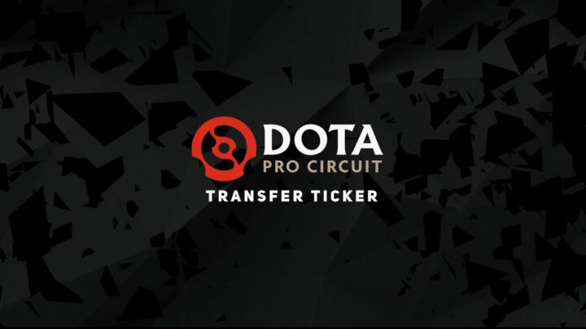

OG welcomes ana back to Dota 2 roster – DPC Transfer Ticker
As the DPC seasons are set to resume, a lot of players are looking for a change in scenery. We’ll keep track of the most important moves.
DPC Europe – Upper Division
(11/04/21) Anathan “ana” Pham moves to main roster of OG
(10/04/21) Igor “iLTW” Filatov joins Team Nigma
(06/04/21) Team Nigma move Aliwi “w33” Omar to the bench
(06/04/21) Jingjun “Sneyking” Wu joins Tundra Esports
(02/04/21) Maurice “KheZu” Gutmann joins Vikin.gg
(31/03/21) Maithe “Biver” Winther (Tundra Esports) retires
(22/03/21) Yeik “MidOne” Nai Zheng (OG) becomes a Free Agent
DPC South America – Upper Division
(09/04/21) Juan “Timo” Cruz joins Unknown
(09/04/21) Leonardo “Mandy” Viana leaves Unknown
(29/03/21) Eliseo “Kxy” Arancibia officially joins Infamous
(22/03/21) Rafael “Sacred” Yonatan and Leonardo “Mandy” Viana join Team Unknown
(22/03/21) Bernardo “Berna” Rocca Alarcon leaves Team Unknown
DPC Southeast Asia – Upper Division
(10/04/21) Ng “ChYuan” Kee Chyuan joins Fnatic
(07/04/21) Natthapon “Masaros” Ouanphakdee (Fnatic) makes move to Motivate.Trust Gaming
(04/04/21) Natthapon “Masaros” Ouanphakdee (Fnatic) is moved to inactive
(23/03/21) Randy “Dreamocel” Sapoetra returns to BOOM Esports
DPC China – Upper Division
(31/03/21) Bai “rOtK” Fan joins Team Elephant as a coach
DPC CIS – Upper Division
(11/04/21) Uladzislau “Kazl” Kazlouski joins Team Empire
(11/04/21) Ivan “VANSKOR” Skorokhod joins Team Empire
(09/04/21) Vitaly “so bad” Oshmankevich leaves Team Spirit
(06/04/21) Rostislav “fn” Lozovoi joins Team Unique
(05/04/21) Vladimir “Noone” Minenko joins AS Monaco Gambit
(05/04/21) Alexander “gwynbleidd” Abakumov becomes a Team Empire substitute
(05/04/21) Sergey “EcNart” Slobodyanyuk leaves Team Empire
(04/04/21) Roman “RAMZES666” Kashnarev joins Natus Vincere
(04/04/21) Viktor “GeneRaL” Nigrini leaves Natus Vincere